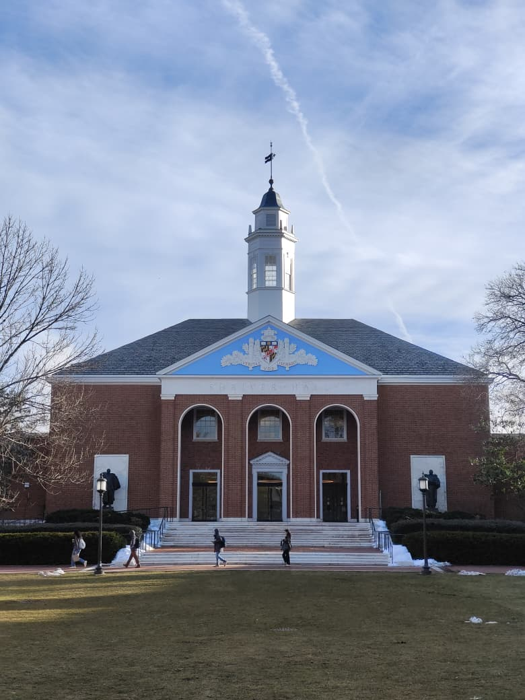
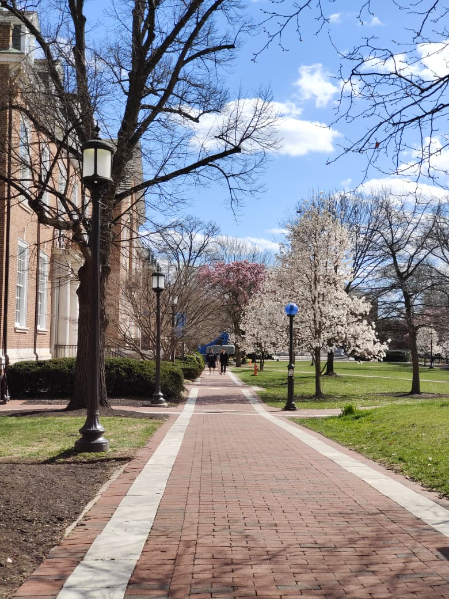

optimal lab
research intern
oct 2024 - may 2025
full stack engineering, machine learning.
I am a full-stack engineer and I spend most of my time contributing to open-source projects and love building algorithms for large-scale applications.
professors, chai, and good-Day biscuits will make me deliver 100x outputs to your lab.
my two biggest itches right now:
If you’re building something cool and think I’d be a good fit, hit me up on my socials or email.
optimal lab
research intern
oct 2024 - may 2025
full stack engineering, machine learning.
manufacturing startup
quality engineering intern
july 2024 - oct 2024
helped reduce product rejection rates.
johns hopkins university
msc systems engineering
2025 - present
currently in first year of the program.
mit world peace university
btech mechanical engineering
2021 - 2025
built strong fundamentals in mechanics, design, and engineering problem solving.
The Home-Wood campus of Johns Hopkins University, Baltimore, MD. I have found myself clicking some good pictures lately. These are two of my favorite pictures from the set.

